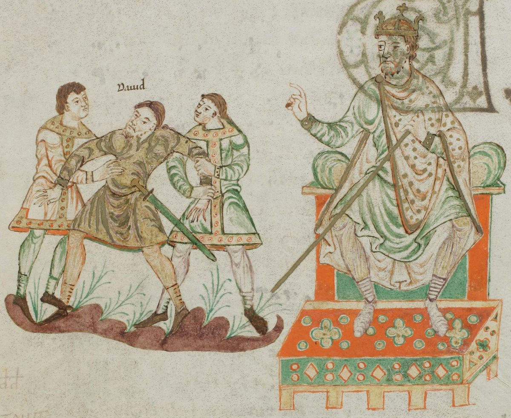

Salmo 34 — La Traducción Mister

David ante el rey de Gat, fingiéndose loco para que lo dejaran ir, la historia a la que apunta el encabezado de este salmo (1 Samuel 21:11–16 en la numeración hebrea). La historia llama al rey Aquis; el encabezado del salmo lo llama Abimélec.

Notas del traductor — versículo por versículo
El encabezado y su historia. «De David, cuando se fingió loco delante de Abimélec, que lo echó, y él se fue»: el encabezado es el versículo 1 en el hebreo, así que cada versículo de esta página va un número por delante de una Biblia en español. Apunta a la historia de David en Gat, donde «cambió su buen juicio a los ojos de ellos, e hizo el loco en sus manos», garabateando en las puertas de la entrada y dejando correr la saliva por su barba (1 Samuel 21:14 en la numeración hebrea). Beshanotó et-taamó, «cuando cambió su taam», repite exactamente las palabras de esa historia. Taam es el gusto, y luego el juicio con que una persona gusta las cosas, el buen juicio; y el versículo 9 usa su verbo, «Gusten y vean que Jehová es bueno». La TNM 1987 tiene «en la ocasión en que disfrazó su cordura ante Abimélec»; la RV 1909 «cuando mudó su semblante delante de Abimelech, y él lo echó, y fuése»; la Douay inglesa, siguiendo al griego, donde él cambia su rostro, «when he changed his countenance before Achimelech».
¿Abimélec o Aquis? La historia llama Aquis al rey de Gat; el encabezado lo llama Abimélec, «mi padre es rey», el nombre del rey de Guerar en los días de Abraham e Isaac (Abimélec, Génesis 20 y 26, ya en estas páginas). Las lecturas difieren: unos toman Abimélec como un título de los reyes filisteos, como hace la Ginebra inglesa en su propio resumen, «which was a general name to all the Kings of the Philistines»; otros piensan que el encabezado conserva otra forma de la tradición. El griego lee Abimélec, y el latín Aquimélec. Dos palabras de la historia vuelven en el salmo: David «hizo el loco», vayitholel, y en el versículo 3 su alma «se gloriará», tithalel, de las mismas letras; y Aquis pregunta «¿Acaso me faltan locos?», con el verbo del versículo 11, «no les faltará ningún bien».
Un alfabeto. Desde el versículo 2 el salmo es un acróstico: cada versículo empieza con la siguiente letra del alfabeto hebreo, marcada al comienzo de cada versículo, desde álef en el versículo 2 hasta tav en el versículo 22. Dos cosas rompen el patrón. No hay línea para vav, la sexta letra: a he en el versículo 6 le sigue zayin en el versículo 7. Y después de tav viene una línea más, el versículo 23, que empieza con pe, podé, «redime». El Salmo 25 tiene los mismos dos rasgos, y su última línea de más empieza «Redime, oh Dios, a Israel», pedé (Salmo 25:22). Una propuesta, que aquí se refiere y no se adopta, nota que la primera letra, la del medio (lámed, versículo 12) y la última forman álef, el nombre de la primera letra.
En todo tiempo. «Bendeciré a Jehová en todo tiempo; su alabanza estará de continuo en mi boca»: el verbo de «Bendice, alma mía, a Jehová» (Salmo 103:1, ya en estas páginas), y tehilá, alabanza. «En Jehová se gloriará mi alma; oigan los humildes y alégrense»: tithalel, la alabanza vuelta sobre uno mismo, una gloria; y los anavim, los humildes, como en «Pero los humildes poseerán la tierra» (Salmo 37:11, ya en estas páginas). La RV60 tiene «Bendeciré a Jehová en todo tiempo; Su alabanza estará de continuo en mi boca»; la NVI «lo alabarán siempre mis labios»; la TNM 1987 «En Jehová se jactará mi alma».
Terrores. «Engrandezcan a Jehová conmigo, y exaltemos a una su nombre»: el imperativo es plural, dicho a los humildes del versículo anterior. «Busqué a Jehová, y él me respondió, y de todos mis terrores me libró»: darash, buscar o consultar, y natsal, arrebatar. Los terrores son megurot, de gur, temer; las mismas letras forman también un verbo «residir como forastero», y el griego leyó «de todas mis estancias como forastero», palabra adecuada para un refugiado en Gat. La RV60 tiene «Y me libró de todos mis temores»; la TNM 1987 «y de todos mis sustos él me libró»; la Douay inglesa «from all my troubles».
Rostros radiantes. «Miraron a él y quedaron radiantes, y sus rostros no se avergonzarán»: naharú, brillar, resplandecer; y yejparu, de la raíz de avergonzarse que comparte sus letras con jafar, cavar. El griego lee los dos verbos como mandatos, «Acérquense a él y sean iluminados», y hace los rostros «de ustedes». La TNM 1987 tiene «Ellos miraron hacia él y quedaron radiantes»; la NVI «Los que lo miran están radiantes»; la RV60 «Los que miraron a él fueron alumbrados»; la Douay inglesa «Come ye to him and be enlightened: and your faces shall not be confounded».
Este afligido. «Este afligido clamó, y Jehová oyó, y lo salvó de todas sus angustias»: zé aní, «este afligido», el que habla señalándose a sí mismo como ejemplo. Aní es el afligido y el pobre en una sola palabra (oní); las angustias son tsarot, lugares estrechos. La TNM 1987 tiene «Este afligido llamó»; la RV60 «Este pobre clamó, y le oyó Jehová, Y lo libró de todas sus angustias».
Un campamento alrededor. «El ángel de Jehová acampa alrededor de los que le temen, y los rescata»: joné, de janá, la raíz de majané, un campamento. Cuando los ángeles de Dios salieron al encuentro de Jacob, él dijo «¡Este es el campamento de Dios!» y llamó al lugar Mahanaim (Génesis 32:3, ya en estas páginas). El malaj es un mensajero; vayjaletsem, «y los rescata», es sacar fuera. La RV60 tiene «El ángel de Jehová acampa alrededor de los que le temen, Y los defiende»; la TNM 1987 «está acampando todo en derredor de los que le temen».
Gusten y vean. «Gusten y vean que Jehová es bueno; feliz el hombre que se refugia en él»: taamú, el verbo del taam del encabezado. El hombre que una vez hizo que su buen juicio pareciera locura invita ahora a otros a gustar. El griego tiene jrēstós, «bondadoso», y Pedro usa esas palabras de Cristo: «si es que han gustado que el Señor es bondadoso» (1 Pedro 2:3, ya en estas páginas). Ashré es «feliz», la primera palabra del Salterio; el hombre es un guéver, un hombre fuerte; y refugiarse es jasá, el verbo detrás de majsé, un refugio. La RV60 tiene «Gustad, y ved que es bueno Jehová; Dichoso el hombre que confía en él»; la TNM 1987 «feliz es el hombre físicamente capacitado que se refugia en él»; la Douay inglesa, desde el latín, «O taste, and see that the Lord is sweet».
Nada les falta. «Teman a Jehová, ustedes sus santos, porque nada les falta a los que le temen»: qedoshav, sus santos, y la raíz jaser, faltar, el verbo de «Jehová es mi pastor; nada me falta» (Salmo 23:1, ya en estas páginas). «Los leoncillos pasan necesidad y hambre, pero a los que buscan a Jehová no les faltará ningún bien»: kefirim, leones en su plenitud, que aun así pueden pasar hambre. El griego lee «los ricos» en lugar de los leones, y por eso la Douay inglesa tiene «The rich have wanted, and have suffered hunger». La RV60 tiene «Los leoncillos necesitan, y tienen hambre; Pero los que buscan a Jehová no tendrán falta de ningún bien»; la TNM 1987 «Los mismos leoncillos crinados han tenido poco a la mano y han padecido hambre».
La voz de un maestro. «Vengan, hijos, escúchenme; el temor de Jehová les enseñaré»: banim, hijos, el trato de un maestro de sabiduría, como en «Oye, hijo mío, la disciplina de tu padre» (Proverbios 1:8, ya en estas páginas). La segunda mitad del salmo pasa aquí de la gratitud a la enseñanza, en lámed, y el verbo de la línea, alamedjem, «les enseñaré», se escribe con las mismas tres letras que el nombre de la letra; la lección es yirat YHVH, el temor de Jehová. La RV60 tiene «Venid, hijos, oídme; El temor de Jehová os enseñaré»; la TNM 1987 «Vengan, hijos, escúchenme».
¿Quién quiere la vida? «¿Quién es el hombre que desea la vida, que ama los días para ver el bien?»: la pregunta se responde con cuatro mandatos. «Guarda tu lengua del mal, y tus labios de hablar engaño»: mirmá, el engaño con que Jacob tomó la bendición de su hermano. «Apártate del mal y haz el bien; busca la paz y síguela»: shalom, y radaf, el verbo de perseguir a un enemigo, vuelto aquí hacia la paz. La RV60 tiene «¿Quién es el hombre que desea vida, Que desea muchos días para ver el bien?»; la TNM 1987 «¿Quién es el hombre que está deleitándose en la vida»; la RV60 otra vez «Apártate del mal, y haz el bien; Busca la paz, y síguela»; la NVI «que se aparte del mal y haga el bien; que busque la paz y la siga».
Los ojos y el rostro. «Los ojos de Jehová están hacia los justos, y sus oídos hacia su clamor. El rostro de Jehová está contra los que hacen el mal, para cortar de la tierra su memoria»: shavatam, su clamor por ayuda. Pedro cita estas líneas del griego, desde «el que quiera amar la vida» hasta «pero el rostro de Jehová está contra los que hacen el mal», y se detiene antes del cortar (1 Pedro 3:10–12, ya en estas páginas); allí el clamor es déēsis, «súplica», la palabra griega de este versículo. La TNM 1987 tiene «y sus oídos están hacia su clamor por ayuda»; la RV60 «Los ojos de Jehová están sobre los justos, Y atentos sus oídos al clamor de ellos», y luego «La ira de Jehová contra los que hacen mal», con ira donde el hebreo dice rostro; la NVI «para borrar de la tierra su memoria».
¿Quién clamó? «Clamaron, y Jehová oyó, y de todas sus angustias los libró»: el hebreo no nombra sujeto, y el plural más cercano es «los que hacen el mal» del versículo anterior. El griego suple «los justos», del versículo 16, y casi todo el estante lo sigue. La RV 1909 tiene «Clamaron los justos, y Jehová oyó»; la NVI «Los justos claman»; la TNM 1987 conserva el hebreo, «Clamaron, y Jehová mismo oyó».
Quebrantados y triturados. «Cercano está Jehová a los quebrantados de corazón, y salva a los triturados de espíritu»: nishberei-lev y dakeei-rúaj, la pareja del Salmo 51, «Los sacrificios de Dios son un espíritu quebrantado; un corazón quebrantado y triturado» (Salmo 51:19, ya en estas páginas). El verbo es shavar, quebrar. La RV60 tiene «Cercano está Jehová a los quebrantados de corazón; Y salva a los contritos de espíritu»; la TNM 1987 «y salva a los que están aplastados en espíritu»; la NVI «y salva a los de espíritu abatido».
Muchos males, ningún hueso quebrado. «Muchos son los males del justo, pero de todos ellos lo libra Jehová»: raot, la palabra del mal del que el salmo manda apartarse a sus alumnos (versículos 14, 15, 17), aquí para lo que le sucede a un hombre bueno. No se le ahorran los males; se le libra de ellos. «Él guarda todos sus huesos; ni uno de ellos es quebrado»: el mismo verbo que los quebrantados de corazón del versículo 19, de modo que los corazones pueden quebrarse y los huesos no. El étsem es un hueso; Juan lee «Ni uno de sus huesos será quebrado» en la cruz (Juan 19:36, ya en estas páginas), donde también está detrás la ley del cordero pascual, «y no quebraréis hueso suyo» (Éxodo 12:46, ya en estas páginas). La RV 1909 tiene «Muchos son los males del justo», y «El guarda todos sus huesos; Ni uno de ellos será quebrantado»; la TNM 1987 «Son muchas las calamidades del justo»; la Douay inglesa, con el plural griego, «keepeth all their bones».
El mal que mata. «El mal dará muerte al malvado, y los que aborrecen al justo serán tenidos por culpables»: el mal del que se libra al justo en el versículo 20 es el mal que mata aquí al malvado. Yeshamu viene de asham, culpa, ser culpable y cargar con lo que la culpa cuesta. La RV 1909 tiene «Matará al malo la maldad», y al final del versículo «serán asolados»; la RV60 «Y los que aborrecen al justo serán condenados»; la TNM 1987 «se los tendrá por culpables»; la Douay inglesa «The death of the wicked is very evil», tras el griego.
La línea de más. «Jehová redime la vida de sus siervos, y no será tenido por culpable ninguno de los que se refugian en él»: la línea después de tav, que empieza con pe, podé, de padá, rescatar a precio. La vida es néfesh. El mismo verbo cierra los dos versículos: los que aborrecen al justo son tenidos por culpables, y los que se refugian no lo son, y el refugio es la palabra del versículo 9. La RV60 tiene «Jehová redime el alma de sus siervos, Y no serán condenados cuantos en él confían»; la TNM 1987 «Jehová está redimiendo el alma de sus siervos».
Patrones que conviene seguir
Donde esta traducción mantiene las palabras exactas y distintas: el encabezado contado como versículo 1, como lo cuenta el hebreo; «gusten» en el versículo 9 junto al taam del encabezado; «los humildes» para anavim, como en el Salmo 37:11; «nada les falta» para jaser, como en el Salmo 23:1; «engaño» y «clamor» en las líneas que cita 1 Pedro 3; «mal» para ra y raá en todo el salmo, también en «los males del justo»; «quebrar» para shavar en los versículos 19 y 21 por igual; «tenidos por culpables» para asham en los versículos 22 y 23 por igual; y el alfabeto marcado letra por letra, sin vav y con una pe de más, como lo tiene el hebreo.
Ecos pagados. «Bendice a Jehová» del Salmo 103; los humildes del Salmo 37; el campamento de Dios en Mahanaim (Génesis 32); el Abimélec de Génesis 20 y 26; «nada me falta» del Salmo 23; el engaño de Jacob (Génesis 27); el corazón quebrantado y triturado del Salmo 51; el hueso pascual de Éxodo 12; y este salmo oído otra vez en 1 Pedro 2:3, 1 Pedro 3:10–12 y Juan 19:36.
Ecos sembrados. David en Gat, haciéndose el loco delante de Aquis (1 Samuel 21:11–16 en la numeración hebrea); y el otro alfabeto sin vav y con una pe de más, el Salmo 25. Ninguno está todavía en estas páginas.
⚠ Nota sobre el orden: los Salmos están en estas páginas en el 1, 23, 27, 34, 37, 46, 51, 91, 103, 119, 121 y 139, elegidos por lo mucho que se leen y no en orden. El hilo secuencial sigue igual: lo siguiente en orden es el Salmo 2.